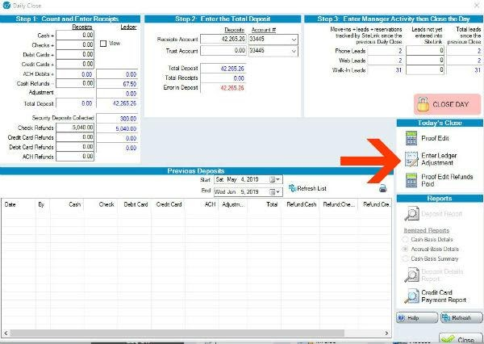
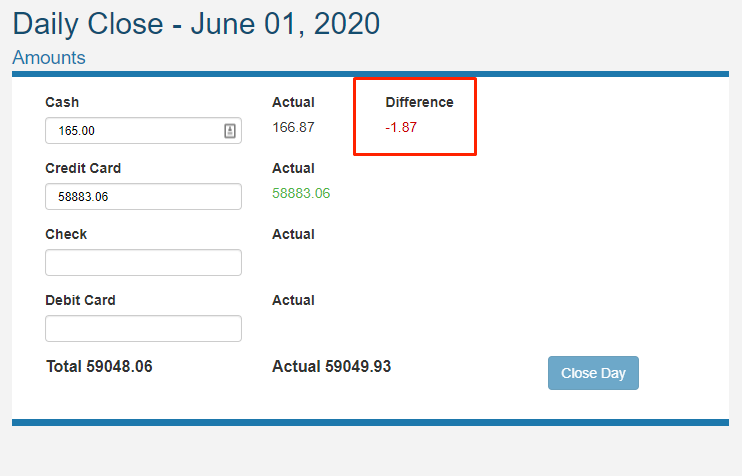
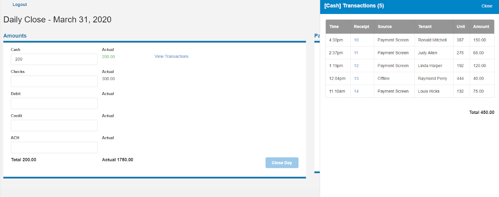
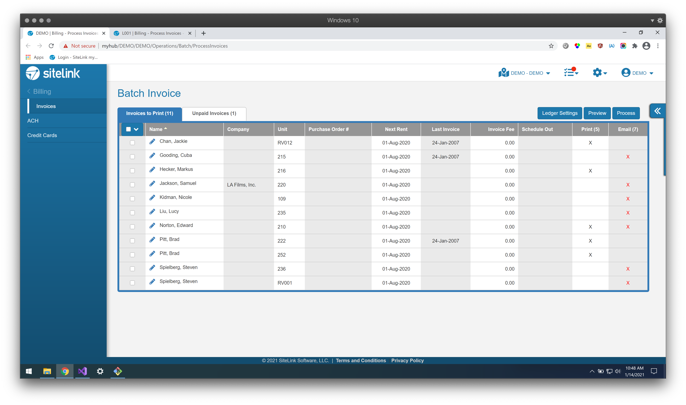
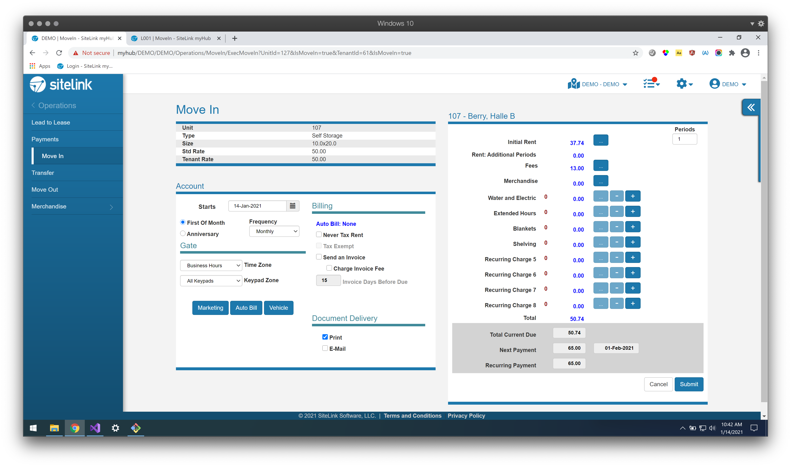
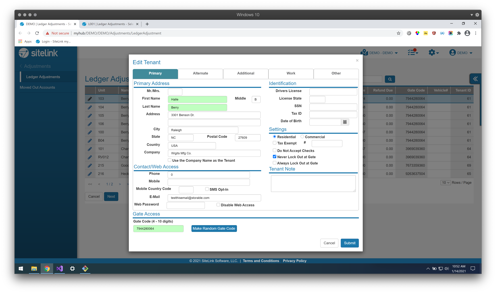
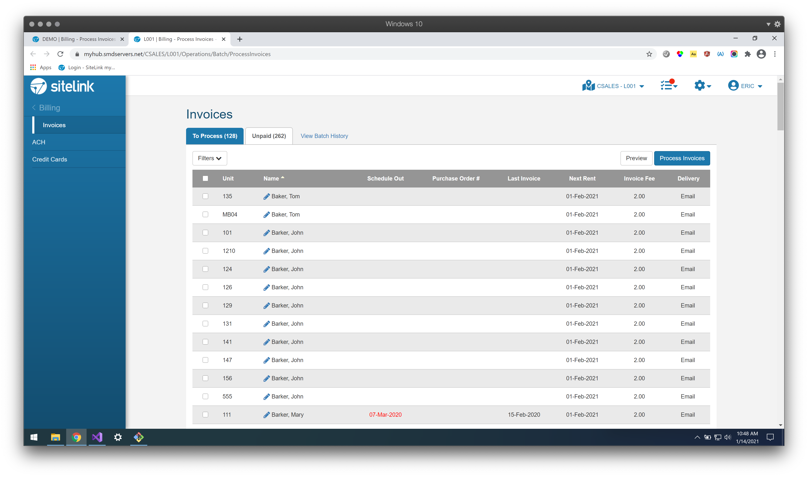
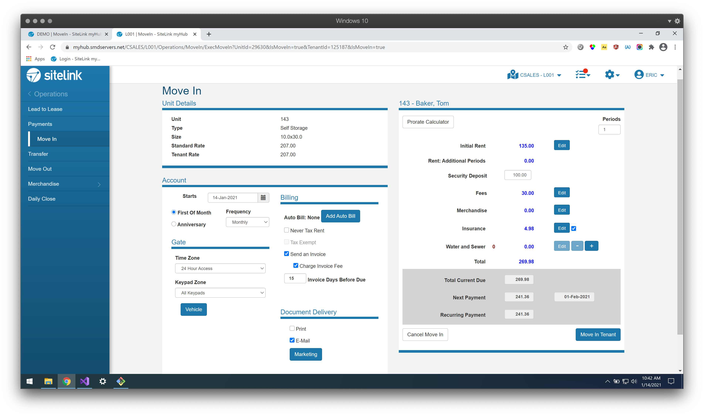
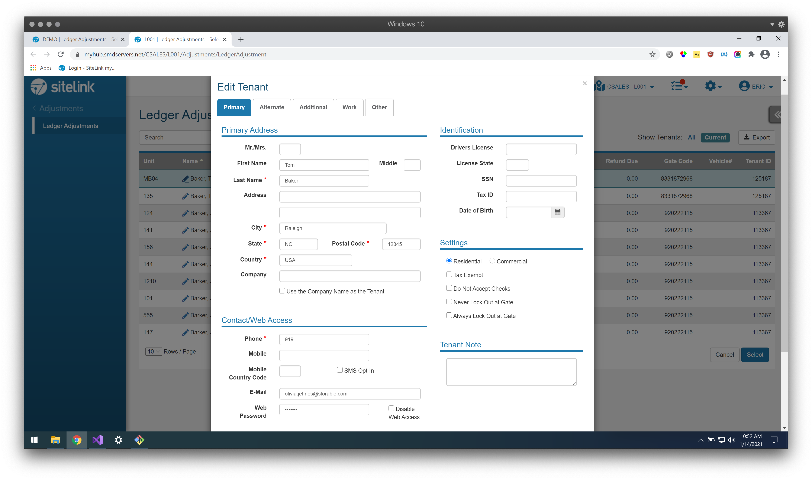

Storable / Sitelink
Storable was on a mission to take over the self storage sector with leading technology solutions. They bought the biggest software operations offering, Sitelink.
As the first designer for a 20 year old windows application. I was tasked with migrating features to the web. I was able to simplify and add value to the future of storage operations.
Key Projects
Daily Close
myHub was a half baked web version that needed to get to feature parity in order for more clients to start using it full-time.
The first feature we worked on moving over was for the daily accounting close process. The legacy windows screen was very overcomplicated and cluttered, so the goal was to create a simpler version to build.
I went on-site with a storage operator to see how they completed their daily accounting and what problems they encountered with the existing options.
I developed some simple concepts to just track the reported and counted types of charges, in order to show any discrepencies to investigate.
I first tested a prototype with some support team members in order to see if the design had promise, which overall was positive.
I then worked on learing React in order to develop a production level prototype which I validated with actual customers and was able to deliver to the engineering team so they could integrate this into the application.
Before
After
 myHub Cleanup
Taking over a web application that was built with no standards in mind by isolated developers and actually went out of its way to copy over windows paradigms, one of the first things I did was a complete site audit. This resulted in finding large discrepencies with things like 60 different shades over blue being used over a small amunt of pages.
In order to keep myself busy and add value when the agile squad was putting out fires resulting from the buggy old windows codebase I worked through every page in the app cleaning up the page designs and code to be more standard and consistent across the site.
This included updating style choices, making things to be cleaner and simpler as well as starting to add better UI patterns that was could utilize going forward.
Before
  After
  Tenant SMS Conversations
A largely requested feature by customers was the ability to have two way texting with their renters straight inside the platform.
Many of our customers were using third party solutions to achieve this but they were clunky and did not integrate with our software.
Again I came up with a few concepts for direction and got some feedback and consensus from the product and design teams, where I then created prototypes to test with actual customers.
This was a huge value add for Sitelink to have a prioritized, validated and simple solutiont to add to both versions of the platform.